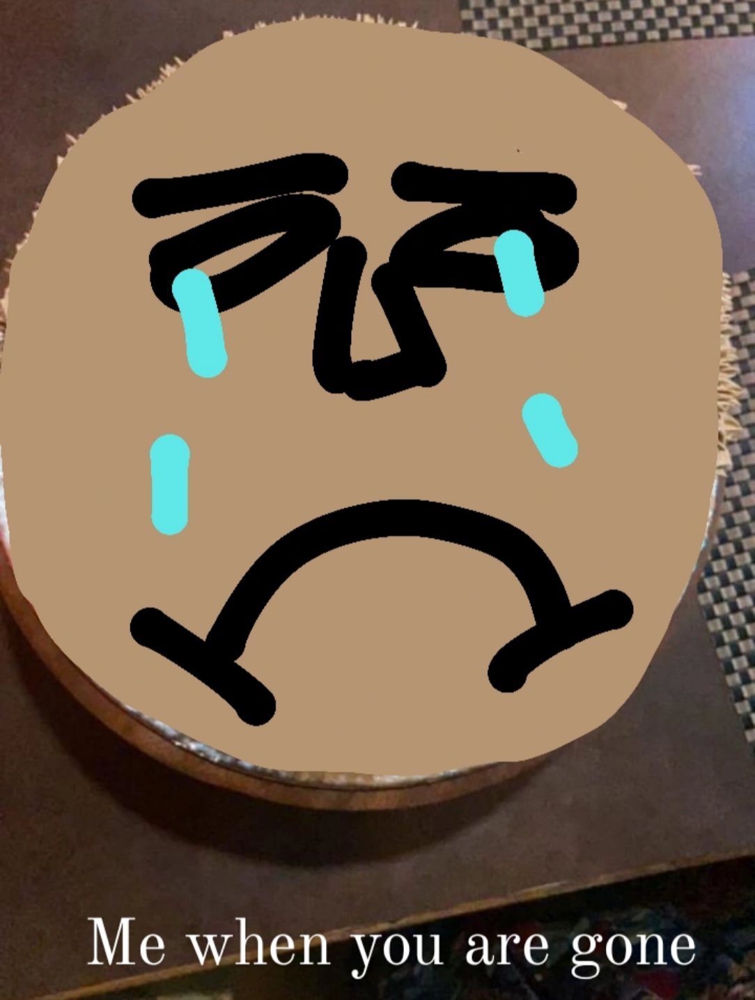
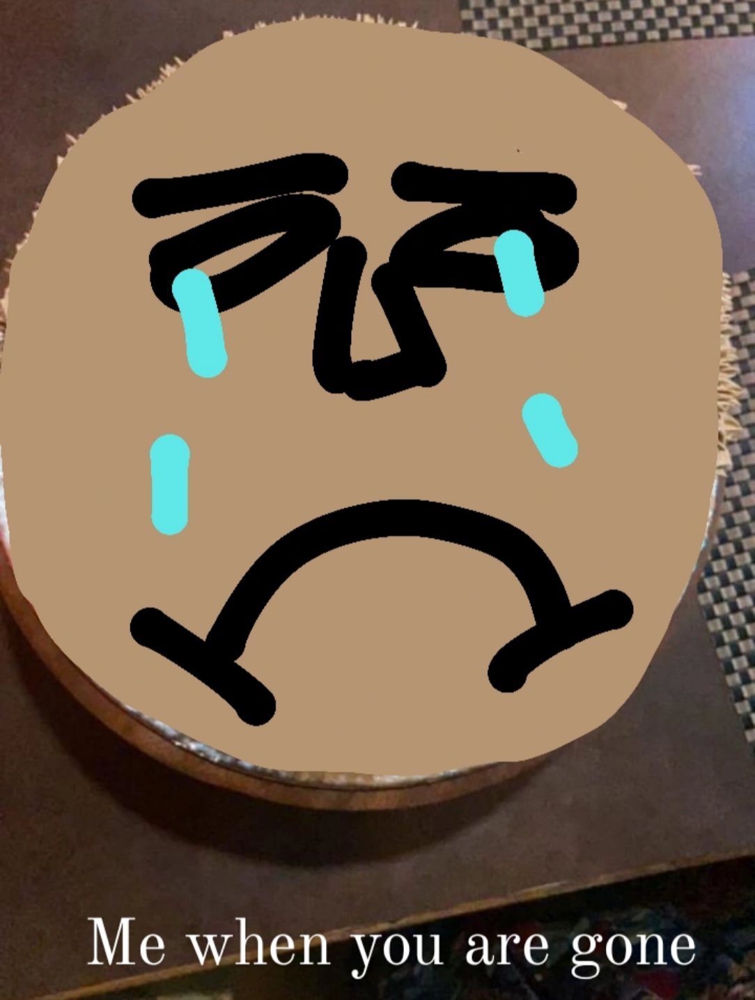

Everything
Oh my God it's been a fucking year now since your last birthday.
Ah okay
SOO...how am I supposed to do this lmao
Okay well.

Time has a way of slipping by, doesn't it?
How tf are here we are again? Your birthday wasn't too long ago, feels like "are abhi to Anushka ka birthday tha"
Damn.
You probably didn’t expect this, right? Or maybe you did.
I mean ofcourse you did.
A letter.
Not just any letter.
Or maybe just another letter, who knows?
But it's something, going to be about more than just a years worth of thoughts, some we shared, some bottled up, some still hidden, too much mystry ey? I mean, it’s not every day I sit down, trying to articulate all of this, or maybe I would if it was last year, it was different back then, writing this is kind of overwhelming, my negativity kills me and eats all of me each day, but I will try and not let this chance go wasted, I really wanted to, not since a week, or a month or two but since the very exact day you turned 15, and damn I have been waiting for this.
But it kinda sucks, sucks in a way how things have changed so much and I don't feel that freedom anymore and perhaps I don't even feel a mouth that has the right to express what I had wanted to for so long, things I wanted to earn the right to tell you.
But hey, it's okay, I promised u right? I know I suck at promises but for today, I can go smoothly with the "One form to another"
And afterall, as you once said,
कुछ बातें अधूरी ही सही..
So it's all okay (ofc it's okay I'm telling myself it's okay 🫠)
I'm really confused on how to start with this, feels weird and overwhelming, there are so many thoughts yet I'm able to write none, maybe let's start from the very fucking start, why don't we?
(Bro won't stop acting as if he's in a YouTube video)
Oh boy, so 2022 it is, 2 years ago.
We don't even know each other, all I know about you is that "Since when and how did Ayushi start looking this healthy and beautiful"
like seriously that was my first thought as you already know.
The first interaction I had with you was on your 14th birthday actually,
I wished u happy birthday that day, we went to that school trip to sun temple, and I think that was it? 2022 me humlog kahan zada baat kiye the,
but I love how my first interaction with you was on your birthday lmao.
So that means today is not just YOUR BIRTHDAY but also the 2nd anniversary of us knowing eachother, god damn I realised this so fucking late wow.
(Hope that's a happy thing)
Yk sometimes I be sitting around and come to a sudden realisation every once a while. It's like "damn, she's not here" "If she would have been here it would have been like this this........."
I have lost so much :_), so much of you and so much of me as well and ig there is no getting back which is fine but damn, I have lost so much.
You saturated me yk, I was stable with you, like alkanes who don't need much of themselves, as for them hydrogen is enough.
You were enough for me,
nothing more,
nothing less,
living when you were there was easy,
studying when you were there was easy,
life was easy,
when you were there the problems didn't matter,
you always took the highlight and made my problems feel nothing,
you were like home.
and for the first time, I existed,
beyond the air in my lungs, and the blood in my veins.
These sudden realisations are enough to give me small seizures.
Yk I feel this inferiority in my pain too, that my pain is fake, who the fuck cries for all these, I know it doesn't matter much to you, it's not something you would take seriously, you will brush it off by saying somethings and that's fine because you have said it, you have given up and don't want to care, but I am in pain, a never ending pain and it keeps getting worse and worse and all that doesn't take away the fact that I exist and so does my pain.
Ik har kuch plate me nhi serve ho ke milta, thik hai, complain krke kuch milega bhi nhi, I'm not blaming you either, but I just wanted to share that my pain matters.
(waise bhi ladka hain, formality to nibhana na hoga ye sab bakwas rona dhona ka 😹)
Who knows what's coming next? Hate to say it but maybe one day, something or someone else will bring me the fullfilment I'm searching for, though I wouldn't prefer it be another person now. But yeah, life is just, like this endless cycle of finding fulfilment, only to loose it again
I wrote this dramatic thing while I was in the bus, sitting alone going home from bridgeford. It's very raw and ik how stupid I am for this ok
The month I thought I had lost something I needed.
But maybe I didn't need any part of it,
It didn't matter—because you were there.
You were there.
Now I'm sitting lonely and alone this time,
Not like like last time, when I was alone but with you beside me.
This time, I had to go without the comfort of a final "broken good luck charm of ice cream stick"
I know I'm being dramatic, who'd still feel this way after everything?
Probably nobody but me, and I don't even know how to feel about that
I don't know how to feel about any of it.
But all that is selfish, and the most selfish person I have ever witnessed is nobody but me. I wish I could have been what you were to me. I wish I could once again hear "my chocolate boy" from you, I wish I could be your Mr Nice Guy, I really wish I could have been the exception you thought I am. I wish I could be what I thought I am. I just wish I could have done things the way you did for me.
When it was August-september, I really hoped things would have been okay by your Birthday, now I don't know what to say about that but I also really really hoped and wished I could celebrate your birthday in a way that feels even better like last time. Lmao you know, I'm never able to enjoy my birthday like others do, like you do, and I'm lowkey more excited about other's birthdays instead of mine. But this time you made my birthday the most special yet, reading the letter you gave me, I can't believe I'm the one being talked about there. I think even you won't believe that the person you wrote that to is me, but let's not go there. Enough depressing shit, will get back to it later.
HI, HAPPY BIRTHDAY BEAUTIFUL SHORT HAIR GIRL.
I'm sorry for being so ugly lmao, u look a little too good. Your short hairs are fine asf.
So, short haired girl with short height (this is a joke).
How are you? Are u smiling?
You should smile, just look at this.
btw, pata nhi yaar mera phone ko kaisa to pyar hogya hai tumse, baar baar notification bhejta rehta tumse related, hum nhi kr paye to mera phone hi age nikal gya 😔😔.
Anyways so..
Man... 2023 was so good, sure there were some issues in the end, but it was GOOD.
It was good because I met you for real this time, best person of the year ain't it? I think you might just be the best person of the decade.
Tum kya kya nhi thi mere liye
Literally My favourite notification
And things I would call you "Amina appi" "Aneska_tt".
Those were "THE" times for me.
Although things have changed a lot,
you were the only human in existence with whom I had the realest connection with.
your laugh was my laugh, you were the light I was the moon.
Good times bhai.
Good times.
If it would have been like last year, this could have been the best day of 2024, if I had a tail, my tail would keep wagging all day out of joy like this
I think every teacher from the previous batch of brothers would agree me and u are the best duo, or maybe not who cares
(Csr does, he misses us)

girl I MISS 2023 BROTHERS,
or Sister's academy or whatever
loved sitting in the opposite row near you,
It's like, just sitting there was so fun and full of everything I ever wanted, I loved going to brothers that year,
heck I used to wish our classes get sheduled for everyday every week I wouldn't care and wouldn't get drained either because you were there.
I would do everything everytime to go there no matter whatever the fuck happens,
I had that rage in me that time yk, you were the one who fired that rage inside me.
I'm telling you, when I say u were the light of my life, I fucking mean it.
Everything is tough in the dark, chota se chota kaam pahad todne type lagta, after that's done the exhaustion I feel is literally as if hum pahad hi Tod ke aye hain.
Yk that day, I came home at around 5:30 from bridgeford, it was a Tuesday,
and Istg if it would have been last year, chahe kitna energy hi bacha ho, I would have done everything to go to brothers just so I could be there with you.
Ab to wo motivation hi nhi Raha. Khair, last year was so fucking fun.
Ssm sir jaise bhi ho, wo acche the humlog ke liye 9th me, tumko publically address bhi kiye the, which I think was the first one to do that, giving u the "underdog" tag. That group chat too, "STUDENTS-D1", it was so fun to beef around in that group with people.
Tumhare birthday hi ke din konsa to ladai hogya tha udhar pata nhi, you were worried or something 😭 and wanted me to stay away,
Archit didn't deserve all that but man I love his memes
I was like oookayyy fir we continued with ur birthday, has to be the best day of 2023 for me.
Seriously you were like earth in this bland empty dark universe for me.
Remember we were on call till like 3am on that day? Apparantly us din Modi sarkar had a visit

Are bhai yaad hai, we used to discuss so much about ghosts and jinns and everything late night too. The late night discussions were PEAK literally the peak
I mean. THE PEAK

I wish we could have been on call rn, but it's okay.
(Not like I would be able to speak, don't have that mouth to do so, but still, kaash things would have been like they were)
I really miss those dry "yh" too

Abto I feel like I might be forgetting the sound of your voice.
Yk you were my partner in everything, every fucking thing, you have raised my standards a Lil too high,
too high ki ab tumse Kam kuch mila to kabhi uspe settle nhi ho payegen,
maybe that's the reason I couldn't vibe with Anupriya. Kismat bhi kitna kharab hai, tumahre jaisa insaan ko chorrna hoga ekdin,
tumhi bolti that "we are better off this way" and Maybe you are right,
but it doesn't stop me from missing you (Not like I'm intentionally doing that),
when I wake up or when it's late and I'm staring at my phone,
there is always this sudden ache in my stomach, a craving that never ends,
although it's normal now so it doesn't feel much, but it's still there,
hoping my delusions will get real. Maybe we could have been somewhere else in life today if I was Lil more mature and knew how to handle myself
but again it's fine.
But I hate that we are supposed to move on, heck you might even have moved on already, or maybe we are just two people chosen by God for eachother to teach eachother something, for me maybe it could be letting go of somebody even if I super-don't want to.
For you, well you will figure it out. Jo bhi ho.
I miss you,
I miss what we were and what we had,
I miss the late night sessions where you would sleep as I talk,
I miss the times you would call me to wake me up,
I miss the times where we would study together.
I miss the times you would console me and treat me like a baby.
I miss the times where you would actually be comfortable enough to share your problems with me.
I miss the times when we were just we.
I miss we.
So,
Magical Mystical Mishti Mushi
what are your plans for this birthday? Are you gonna have a birthday party thing with ur birthday twin and family again? The cake u had last year was so cute lmao 
 What are you gonna do?
Do tell me if you want to.
[ You just said you don't like being asked about what you are doing :_) ]
So What is the nature's plan for us tho? We never know,
I don't know what will happen,
maybe our paths will cross again? That sounds so movieish lmao, it won't.
Nope I haven't learnt to accept things,
don't know how to, I don't even know what's accepting.
Yeah "what's gone and what's to come is all a part of growth" and blah blah.
Khair past aur future dono ma chudaye. But for today, just know I’m thinking of you. Not just as “you” in the past, but the person who helped shape so much of how I think, feel, and live now. And yes I'm not the best version of me rn, I'm a dick head, but u have changed a lot in me, even after u go, the changes will keep coming up as I take super long to realise, so kind of you are a person who will shape my future too even if u go.
I’ve watched you handle things most people our age wouldn’t even know how to start with. And yet, you push through. If I had ur life I would have killed myself lol, and yet I cried so much about mine and still do. You’ve grown in ways that are almost impossible to describe, but you’re stronger, wiser, and when I say ur feets and deeply attached to the roots in the soil, I mean it, because you don't change, I mean yes you do, but you change in a way that's more you, you become a deeper you and that's something I felt way before, and I think it's true, the way u are rn and the way u were a year ago, I can easily accept that yes this is you.
Yk, There’s this way you have of understanding people, like you can see past all the bullshit and get to who they are. It’s a gift, and not everyone has it.
You have so much ahead of you, Anushka. Hope this next year will brings new challenges, and also bring new chances to grow, to become more of the person you’re meant to be. I know you’re going to make the most of it, you always do.
I swear to god it's so tough expressing 😭.
This year, this is a wasted year and is still being wasted right infront of my eyes. You know everytime I go to mall, nucleus mall specifically, the smell there just reminds me of us going there, Last year we had our small lil farewell because we thought humlog dono alag coaching me shift hojaygen from 10th, kuch zada hi alag hogye 10th me 💀,
You remember we were talking that one day, and you were putting up stories, of ur close friends,
sakshi,
ridam
and some of ur online friends,
I got happy asf when I saw that green circle on ur story,
you had tagged a "certain" type of people and I WAS THERE TOO :D.
I still remember how happy I was by that lmao. 2023 was just good.
Btw still remember the first text?
Fuck bhai,
how can I ever forget that Anushka-Ridam-Shahrul trio?
Fuck. Fuck. Fuck.
Idk how you all felt bhai, but for me having you all WAS THE BEST no like the feeling is just so good,
You know how some moments only hit you later,
like you realize how good they were after they’re gone,
but nah, we 3, the feeling I had was felt in the moment,
and yk when you get those feelings of things were in the past and you just feel
"Oh I wish I could hold onto that feeling for little longer, I wanna experience that nostalgia again"
I feel that, I think I felt the most fullfilled ever with us 3.
That feeling can't be ever replicated
It all started from the planning for Sakshi's birthday (kind of),
Everything was planned a night before the maths exam,
kuch padhe hi nhi the dhang se bhenchod care hi nhi tha 💀.
Peak Moj masti era ahh.
That small lil birthday party (on which I was later attacked by 2 guys for) was super fun.
I loved it.
Kitna baar hi milenge aise dost,
sad how everythings fucked up but it's rare to have people like you all
Love this pic btw
I loved that episode after entering ssm sir's class lmao
it was fun and embarrassing but I'm not embarrassed about it but it was still embarrassing but it was fun,
the meet-up itself was crazy, bhenchod Rishi bhi tapak gya tha 😭
W day,
memorable Day.
And whatever the GC became after that birthday,
damnnnnnn.
Will never forget it lmao. Kya hi fetish tha tumhara ye word "Chimta" ke sath lmao, such an iconic name
Love how we all had matching pfps with the same themes and all that we created a religion out of it
we used to call u when we were out, it was so fun,
I remember calling u all the times I was outside,
it was FUN and I just can't explain the feeling I have of it, like bruh, it's so so so this thing idk,
I remember so many instances where I was outside and bored so I just called u while I walk to home,
kabhi school se are hon,
kabhi ghum ke are ho those days were my definition of peace and fullfilment.
Literally treated you two like mum and dad 😭
There were so many days I remember,
ek to October 27 tha, both of sung so fucking well like damn, and that day 5th of November, W day.
first it was ridam and you
then ridam and me
and now me and you.
But again, atleast ek time pe to sath the,
agar Zinda rhe to it would be an amazing part of our lore right.
you know after December, it wasn't too bad,
like yeah March was fucked but it was okay okay.
Even tho Ridam was gone,
I still felt home with you,
and by time, you,
you became my Everything I just miss the feeling of those times.
Pata hai be express krne me itna dikkat hora haina bhenchod, lag to Aisa rha hai as if the all the other times I felt I can't express was nothing but acting.
Yk some say losing a best friend hurts more than a breakup. Others say a breakup cuts deeper than losing a friend.
But me? What do I say, I lost both bruh 💀. It’s somewhat funny, but obviously it hurts too, alot. You've set my standards a Lil too high, so finding someone who can measure up? Not gonna be easy. I'm so stuck on you that I can’t even bring myself to like anyone else. Like you are so perfect lmao, I mean sure you can be a piece of shit sometimes, but you are just good.
Ik u don't like hearing all that so I won't go there.
(ALSO YOU ARE SO BEAUTIFUL SHORT HAIRED GIRL, THINK I CAN FIND A PERFECT COMBINATION OF SOMEONE WHO'S BOTH SO FUCKING BEAUTIFUL FROM THE OUTSIDE AND THE INSIDE AGAIN?)
You are super-beautiful lmao
You know I'm a piece of shit, I never changed, I never could change, I mean, "I'm just a boy 🤭🎀", ab khub Sara randi rona krke kuch nhi Krna to sort of khoon me hi hai (Ya fir balls me hai? Who knows)
Okay Sorry for that but I wanted to apologise, ab ye apology hum ye intention se nhi likh rhe ki kuch thik hojay, ab kya hi thik hoga, jo samay tha wo nikal gya, ab agar hum chahe bhi sab thik Krna to wo tum nhi chahogi, you prefer us being distanced like this, which is okay, you prefer that because I hurt you enough to make that choice. I just wish I had done things differently, I wish I didn't let you down so you didn’t feel you had to. But it's done now, and all the things I'm aware of u did was reasonable, justified, fair and valid, and it's good that u left me, because to gain something better, you gotta loose something, obviously you deserve so much better, and the decisions u made are good for you.
Sometimes I doubt I might have gotten you into hating me, and I'm sorry, if only I was not selfish in my grief, I could have saved us, I could have saved us in the right time, when it was the right time, I didn't even see how unfair things were for you, I didn't see how hard you tried to be there for me, you gave your everything for me, and I just kept failing you. And yep, I couldn't, I failed, failed in every single way.
Sometimes I think, do I even love anybody? I doubt I love my parents, I doubt If I can even love, Last year, Inshiraah came, Inshiraah left, fine, but from that I realised, I'm so capable of love, when you came, you changed everything, you changed my life in ways I could never ever imagine, you helped me know me, you helped me sharpen me, but now that you are leaving, I realised I'm no more that man you helped me realise I was, I'm not a person who's capable of real love, not beyond words, and hence I feel like I don't love anyone and anybody. I failed to love you, I was so selfish.
yk I made these Lil goals just so I could earn the right to say it once again, "I love you, a little more, by a little too much" I hope you don't see them as excuse and self blame thing but that's literally how I feel.
I understand I have put you through a lot of pain, I was someone you expected from and I kept disappointing, I just didn't change, I was too selfish, the times I would set goals, try evrything I can, I would journal, go on walks, and just try, yet I failed everytime. I have made some terrible mistakes and I never made up for it, even if I did, I did something worse the next time and I'm sorry, I'm sorry I couldn't fix anything, I'm sorry I couldn't change, I'm sorry for everything I did to you, I'm so sorry that I wish I never met you to give you this much in the first place. I am sorry. I really am.
This is so unrelated but I started watching family guy and came to a realisation that I might be Lil like Peter Griffin and you like Louis Griffin.
We had our share of laughter and absurdity.
I was the goofy, sometimes a carefree spirit, sometimes a overworried crybaby, while you were the grounding force, much like Lois, trying to make sense of this world for me and you.
But just as Peter often overlooked Lois's wisdom, I failed to see the depth of your struggles.
I hope one day, like them, we can break down these walls and find that joy again that we once shared. WAIT FUCK
I got delusional again (Bro literally won't stop acting as if he's in a YouTube video)
Ngl Inshiraah said one thing right that I am delusional. (Bro won't stop acting like he's in YouTube video and neither would he stop making self-deprecating jokes)
Yk even after all this, I keep looking for you knowing neither of us is gonna interact or talk, ab chahe wo school ho brothers ho or whatever, but that's okay. I don't know how much time do we have left, brothers will be over soon, so will be the school, I hate how I wasted it. Again, it's delusional to think so but I hope kabhi wapas dost banne ka mauka mile.
You too, were my one for all and all for one.
Man it hurts so much to use words like "was" "were" "Used to" instead of "Is" "am" "are" ;(
Koi ni it's fine.
Ahh, I honestly have no idea about what to say, I'm stuck. I'm not sure If I should make a decision. Sure you asked me to and I did ask for time, but that time ends today, exactly a month is over now. So, what now? You have said you want something casual, but I still find myself hoping for something more, A friend, a Best Friend. It's fine if we talk less, but when we do, I wanted it to feel like we are friends, good friends. But Maybe that's not what you want, which is again, completely fine and fair and justified and reasonable and understandable. I just.. I'm not sure what you want anymore. What do you want? I just want peace and remove this sadness and instability from my life. If you want what I want, maybe something could work, but rn, I just don't know the truth. The problem is, you don't share, like for me, I still can't get u off my head, it's 24/7 you. It's a lot and I fail to express all that. But you treat me like nothing, which is wrong of me to think like that way, but sometimes I would even feel like I'm being treated like a stray. Which is again wrong of me to interpret like that considering how I treated you and I'm sorry for it.. I'm sorry once again because I'm not able to express what Im trying to convey, I hope it doesn't create much problems.
It's just for once, I want you to share, if that's something you don't wanna do, it's fine. But ek baar sochna
Jo bhi decision ho, agar wo decision same hi hai jaise pehle tha, to humko block kr dena, because Im like a parasite who would keep lingering on you, keep draining you but won't kill you. I have these weekly panic attacks and shit and I freakout real bad, us time pe hum tumko text kr hi dete hain, maybe then u will feel bad for me which is okay, and you will say some things like "we can talk sometimes" and fir jab hum baat krne aygen to tum kuch aisa chubhne wala baat bol dogi ki mera fat jayega pura din aur barbad hoke reh jayega, I understand I have done similar things and I'm sorry for it, but its just if I come to you for help and the very opposite happens its not right, I wish I could say I love you, but I can't. There is no point in saying it if I couldn't do any good for you. And you know Im very selfish, I need you, I don't even wanna say things like you should block me, you should leave me, I don't want you two but its unfair, becomes things from ur prespective are way diff, and u deserve so much I couldn't give to you. But again I need you, I want you, but it's unfair, and I don't deserve so much chances eihter. Hum tumhare upar chorr rahe ye decision, not completey tho, I will co-operate with you whatever ur decision becomes and I will add-up to it, I wont try to support you, I WILL SUPPORT YOU OKAY?. I will be a good boy once and not give u pain, bas let me know ur decision.
ok that was a lot
lets not get too depressing.
But hope nothing I said was as bad as Travis Scott's apology from 2021 🙏
It's tough expressing bhai, I wish I could write something you did on my birthday but yeah...
It's okay, the only thing I can say in present tense is that, you still are my everything, but snatched away, and it's okay, you have locked all the doors to access and it's fine, because u were forced into that decision, you were left with no choice....
I think I wrote a poem on it lmao, lemme find and copy paste it here, I write shit poems tho, not a poet like you and ridam, very raw.
I hope you get everything you have ever dreamt of and more
I hope life opens doors for you that you didn't even knew existed
I hope you find a way to let your light shine through those walls for a path meant just for you
But,
it seems you won't let me asking if you do,
It seems you won't have me cheering you as you do,
It seems you have locked that door which leads to me and swallowed it's key
It's seems you have put your walls high enough to be breached by me
It's lonely in here, might be for you too.
But,
I hope you are doing okay.
Thank you Anushka, you gave me a lot, you gave me a forever, even if it was meant for a numbered amount of days, well I guess some infinites are larger than other infinites.
But I will always remember this forever. :)
I think I will end this letter now, I'm sorry because I might have said some stuff that might have unknowingly hurt you, maybe even some things I'm aware might hurt you but I still said it anyway, this is it, thank you for reading. This really was a lot more than just casual.
Once again, a very fucking happy birthday to you, hope atleast for today you can be truly happy and continue to have brighter days from today, all the best mushi.
Thank you for Everything, Sorry For Everything, and this was The Everything.
Take care.
~Sarhul Ranchi fastivul